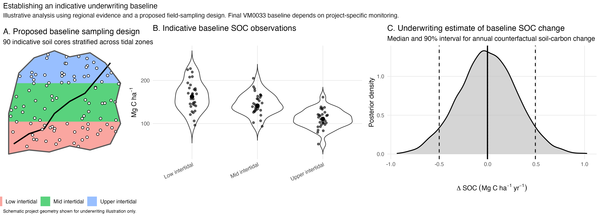
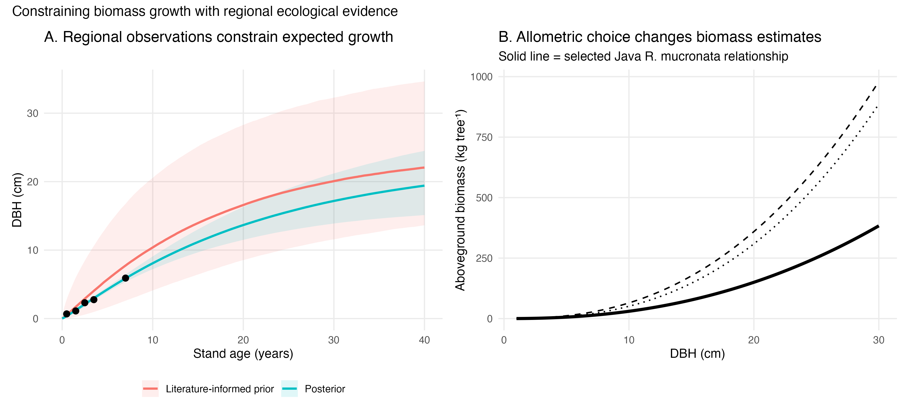
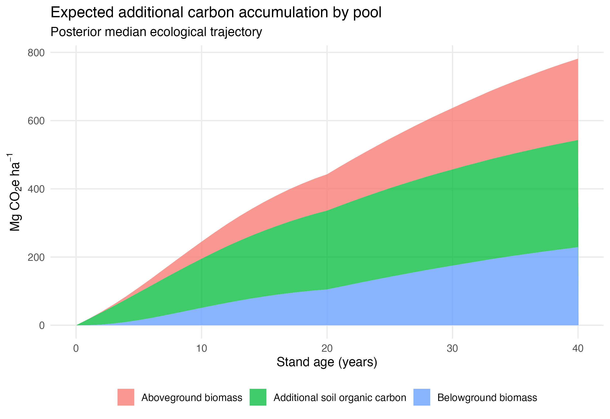
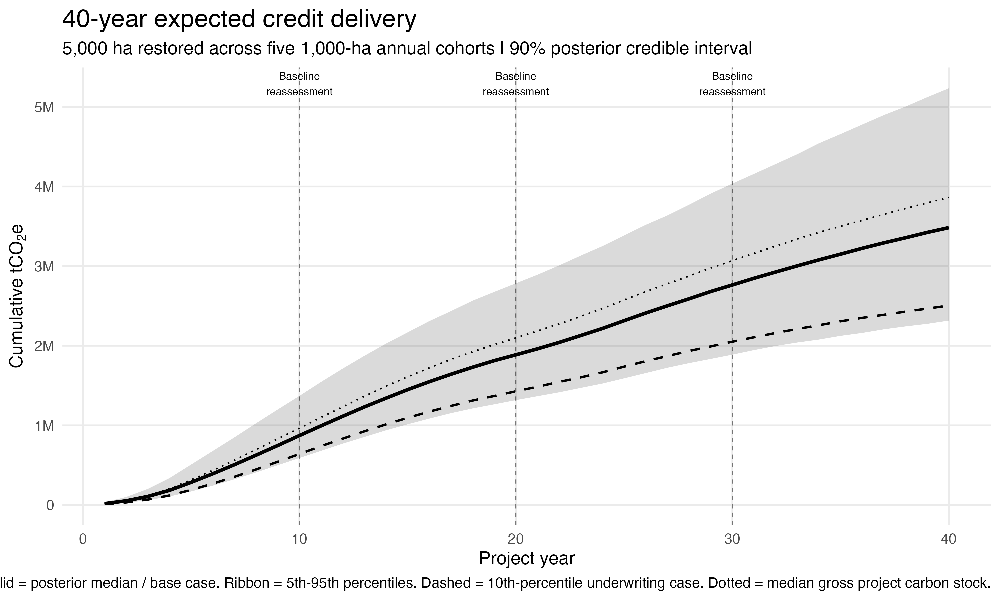

Blue carbon mangrove restoration.
An underwriting analysis for a 5,000-ha mangrove ecosystem restoration project in Java, Indonesia, designed to translate ecological evidence into a defensible 40-year carbon delivery forecast.
The project context.
The modeled project restores degraded, non-forested mangrove habitat in Java, primarily using Rhizophora mucronata.
Restoration is phased over five years, with 1,000 ha entering restoration each year. The underwriting period is 40 years. In the absence of intervention, the site is assumed to remain non-forested with no material natural mangrove regeneration.
The analysis is framed around VM0033 v2.1. Rather than starting with an assumed tCO₂e/ha/year value, the model builds the delivery curve from the ecological processes that determine carbon accumulation: establishment, growth, stand density, allometry, belowground allocation, soil carbon, and the counterfactual baseline.
What needed to be answered.
For underwriting, the central question is not simply how much carbon a mature mangrove can contain. It is how much additional carbon this restoration plan can reasonably deliver, when that carbon is expected to arrive, and which assumptions create material downside risk.
Estimate the counterfactual before estimating the credits.
A degraded site is not the same thing as a zero-carbon site.
The project is assumed to have negligible baseline woody-biomass accumulation because no natural mangrove regeneration is expected. Soil carbon is different: degraded tidal wetlands can retain substantial existing SOC and may continue to gain or lose carbon without restoration.
For underwriting, the area is stratified into representative tidal zones and a soil-sampling campaign is used to characterize baseline SOC. Existing SOC stocks are not credited. The relevant baseline quantity is the counterfactual change in carbon stock without the project.

Why it matters
Assuming “degraded land = zero baseline” can hide material uncertainty. Underwriting is stronger when the counterfactual is treated as something to estimate and update, not a convenient constant.
Use regional observations to constrain biological growth.
The biomass trajectory is modeled from tree growth rather than imposed directly. A Bayesian Chapman–Richards model provides a flexible representation of diameter growth through time. Literature-informed priors define the biologically plausible parameter space; observations from restored R. mucronata stands in Java update those priors.
This produces a posterior distribution of growth trajectories. The posterior median becomes the central ecological expectation, while the full posterior is preserved for uncertainty propagation.
Stand density is modeled separately. The underwriting design assumes 2,500 planted stems/ha, followed by establishment and self-thinning toward approximately 1,000 stems/ha by year 20. This avoids the common error of applying mature-tree allometry to the original planting density for the full project life.

Keep biomass and soil carbon as separate ecological processes.
Aboveground biomass is estimated from posterior DBH trajectories using a regionally relevant R. mucronata allometric relationship. Belowground biomass is treated as an age-dependent allocation process, with relatively high root allocation in young mangroves declining toward a mature root:shoot relationship as the stand develops.
Soil organic carbon is modeled independently. Regional degraded-versus-restored mangrove evidence constrains a prior for restoration-attributable SOC accumulation. The model credits the difference between project-driven SOC gain and the counterfactual baseline SOC change—not the soil carbon already present at project start.

Scale the ecology into a credit-delivery forecast.
Every annual planting cohort follows the same probabilistic ecological model but begins accumulating carbon in a different project year. The five cohorts are then aggregated into the 5,000-ha project trajectory.
Leakage is set to zero for this underwriting example conditional on the assumed project conditions and methodology applicability. A formal uncertainty deduction is also set to zero conditional on the future monitoring program achieving the methodology's required precision. Neither assumption means forecast uncertainty is zero: ecological uncertainty remains explicitly propagated through the posterior.
The buffer withholding shown in the working model would be replaced by the project’s formal AFOLU non-permanence risk assessment.

The output is a distribution of delivery—not a single carbon curve.
The purpose of the model is to identify which ecological assumptions drive expected delivery, constrain those assumptions with the best available evidence, and carry the remaining uncertainty into the financing decision. As project-specific observations arrive, the same Bayesian framework can update the forecast rather than rebuilding it from scratch.
Selected evidence & methodology
This draft is intended for review. Final publication should include a complete parameter/source table linking every underwriting prior and modeling assumption to its supporting evidence.
Verra · VM0033 Methodology for Tidal Wetland and Seagrass Restoration v2.1